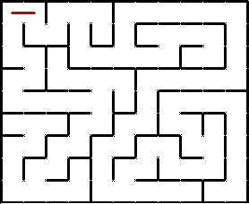
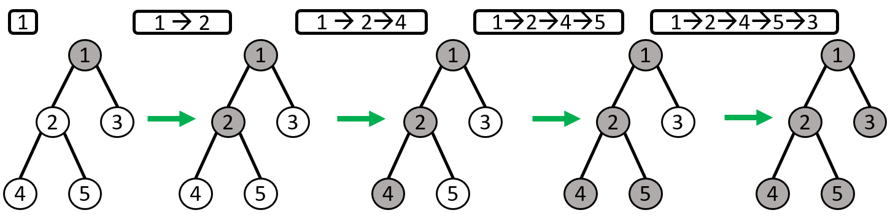
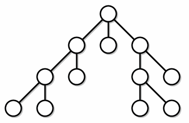

DFS |
|||||
| Главная | Основные понятия Виды графов |
Способы объявления | DFS | BFS | Доп.информация |
|
 DFS, или Depth First Search, — поиск в глубину, позволяющий найти маршрут от точки A до точки B. Используется в графах — особых структурах, состоящих из точек-вершин и ребер-путей. DFS ищет маршрут по графу “в глубину”: на каждом шаге “уходит” все дальше. Классический пример использования алгоритма — поиск случайного пути в лабиринте. DFS начинает работу в заданной точке, на каждом шаге проходит по лабиринту до следующего поворота и выбирает направление. Если путь оказывается тупиковым, алгоритм возвращается к предыдущему повороту и пробует новое направление. В результате рано или поздно находится нужный путь. Кроме лабиринтов, DFS может “пройти” практически по любому графу или дереву. |
|||||
Принцип обхода графа в глубинуМы рассмотрим стандартный рекурсивный алгоритм обхода. Первый шаг. Когда алгоритм начинает работу, все вершины считаются “белыми”, непосещенными. DFS начинает путь в заранее заданной вершине v и должен найти от нее путь до другой заданной вершины или же полностью составить карту графа. Первое, что делает DFS, — красит вершину, в которой находится, в серый цвет. Это показывает, что алгоритм в ней уже был. Затем DFS проверяет соседей — вершины, которые соединены с той, где он находится.  Переход. Если какая-то из смежных вершин белая, алгоритм переходит на нее и повторяет те же действия: красит в серый, ищет соседей. Это происходит не циклически, а рекурсивно: если представить DFS как функцию, то получится, что эта функция в ходе выполнения вызывает сама себя, но для другой вершины. Поэтому сначала алгоритм работает с одним выбранным соседом и, только если упирается в тупик, возвращается обратно и пробует пройти по другому пути. Выбор соседа происходит случайно или по заранее заданным критериям — например, это может быть самая левая или самая правая вершина. Выше мы упоминали “правило левой руки”: оно по сути является таким критерием.  Если неисследованных соседей у вершины не осталось, она красится в черный цвет как полностью посещенная. Завершение обхода. Алгоритм завершается, если достигает нужной точки. В таком случае все вызванные “экземпляры” функции поочередно завершаются: от последнего до первого вызванного. Если задача — полностью перебрать граф, то критерий для завершения другой: все вершины должны стать черными.
|
|||||
Примеры использованияЕсть ли в ореинтированном графе цикл?Напомним, что циклом в графе называется ненулевой путь, ведущий из вершины в саму себя. Рассмотрим задачу, в которой нужно определить, есть ли цикл в ореинтированном графе. Если есть, то вывести 1, если нет 0.
Выделение компонент связностиАлгоритм обхода в глубину позволяет решать множество различных задач. Например, реализуем при помощи алгоритма обхода в глубину подсчет числа компонент связности в неориентированном графе. Для этого будем обходить все вершины графа и проверять, была ли очередная вершина посещена ранее. Если не была – то это означает, что найдена новая компонента связности, для выделения всей компоненты связности необходимо запустить DFS от этой вершины.
Является ли граф деревом?Мы знаем, что в дереве число вершин на 1 больше числа ребер. Тогда чтобы данный граф был деревом, он должен быть связным и количество должно быть вершин на 1 больше числа ребер. Тогда посчитаем количество ребер и проверим на связность (т.е. число компонент связности равно 0). Это мы умеем делать из предыдущего алгоритма.
Является ли граф двудольным?Граф называется двудольным, если его вершины можно разбить на два множества так, что концы каждого ребра принадлежат разным множествам. Иными словами, можно покрасить вершины графа в два цвета так, что концы каждого ребра покрашены в разный цвет. Модифицируем алгоритм DFS так, что он будет проверять граф на двудольность и строить покраску графа в два цвета (если он двудольный). Для этого заменим список used на список Color, в котором будем хранить значение 0 для непосещенных вершин, а для посещенных вершин будем гранить значение 1 или 2 – ее цвет. Алгоритм DFS для каждого ребра будет проверять цвет конечной вершины этого ребра. Если вершина не была посещена, то она красится в цвет, неравный цвету текущей вершины. Если же вершина была посещена, то ребро либо пропускается, если его концы – разноцветные, а если его концы одного цвета, то делается пометка, что граф не является двудольным (переменной IsBipartite присваивается значение False, по ее значению можно судить о том, является ли граф двудольный).
|
|||||